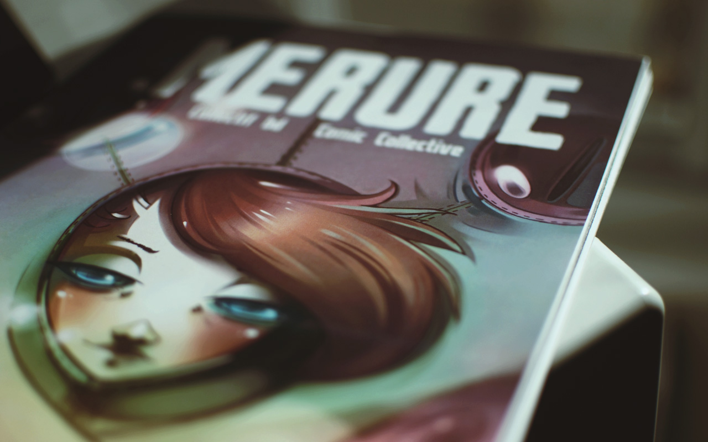

pino
rekka
grimgrains
drownspire/
devine lu linvega
merure/
vambits

10T14 — Merure Release
The Merure books, were a series of comics published with friends.
itunes
Last update on
10V01
.
10T14 — Merure Release